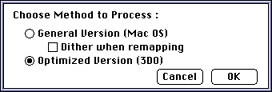
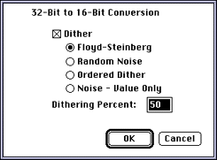

Images in 3DO Animator
3DO Animator does not offer a separate option for saving images. However,
if you first resize source art appropriately (320 x 240 if using an NTSC
display), the 3DO hardware will treat source art saved as a 16-bit uncoded
cel as an image.
For more information
For more information on how to decide which cel type to use, see
Introduction to 3DO Graphics
Converting 32-bit source art to a 16-bit uncoded cel
When you convert 32-bit source art to a 16-bit uncoded cel, 3DO Animator
has to reduce the colors. You are prompted for the method to process.
To convert 32-bit source art, follow these steps:
Launch 3DO Animator and open the file.
Type 3 to bring up the Set 3DO Object Type dialog.
From the Cel Types pop-up, select Uncoded 16.
Click the Remap Document button to apply the cel type selection.
Choose the method to process from the dialog that appears (see the
figure below).

Figure 1: Process method dialog.
3DO Animator creates a new document that has an extension Uncoded16.
Choose a conversion algorithm from the dialog that appears.

Figure 2: 32-bit to 16-bit conversion choices.
3DO Animator now reduces the colors in the document and creates a
16-bit uncoded cel.
With the new document selected, choose Save from the File menu.
The 3DOcel/anim file type should already be selected.
Type a different name if you like, then choose OK and you're done.